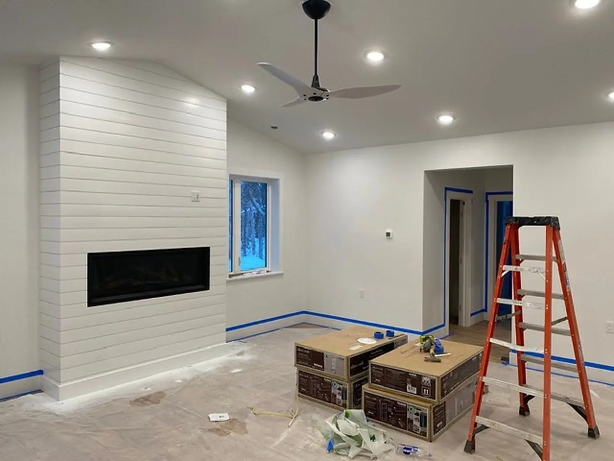

Water damage restoration near Fort Wainwright, AlaskaWater in the house?
We dry it and rebuild it.
For homes off post near Fort Wainwright, in east Fairbanks and North Pole, Edstrom Construction handles water damage from start to finish: extraction, drying, documentation for your insurance claim and the rebuild. If you're renting, contact your landlord or property manager first. If you own the home, or manage it for an owner who is stationed elsewhere, call us directly.
Fort Wainwright
Owners, landlords and families who PCS
Water damage doesn't wait for a convenient time.
Local know-how
Vacant homes and winter freeze-ups
When a home sits empty between tenants or during a deployment, a heating failure can freeze water lines and cause a large leak that goes unnoticed for days. If you're leaving a home empty for winter, keep the heat on and have someone check it. If a pipe has already burst, licensed plumbing partners repair it and we handle the water damage. See frozen and burst pipe damage.
On-post family housing repairs go through the housing maintenance office.
How it works
What to expect.
- 01
Shut off water
If you can safely reach the main shutoff, turn it off, then call us.
- 02
Extract
We remove standing water and materials that can't be dried.
- 03
Dry and document
Drying runs until moisture readings are dry; we document everything.
- 04
Rebuild
Drywall, flooring and finishes are replaced from the approved scope.
Questions
Straight answers.
I rent off post. Who do I call?
Call your landlord or property manager first. They decide who makes repairs. We work directly with owners and managers.
Can you handle repairs for my home while I'm stationed elsewhere?
Yes. We work with you or your property manager by phone and email and send photos as the work goes.
Do you bill insurance?
For covered losses we document the damage, meet the adjuster and bill your insurance company directly. Your insurer decides coverage.
Do you work in on-post housing?
Repairs in on-post family housing go through the housing maintenance office.
Coverage and payment are decided by your policy and your insurance company. Edstrom Construction is a licensed general contractor, not a public adjuster, and an estimate is not a guarantee of final cost.
Service area
Fort Wainwright and the rest of the Fairbanks area.
Edstrom Construction Co., LLC works in Fairbanks, North Pole and Fort Wainwright from our shop at 2135 Richardson Hwy, North Pole, AK 99705. Call (907) 488-0452 or email office@edstromak.com.
- Fairbanks
- North Pole
- Fort Wainwright